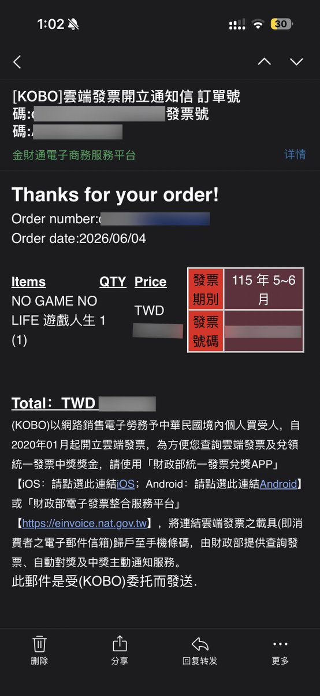

たたなこ
@tatanakots
@moonlight_ruri 貌似书面语中发票还是发票？毕竟我网购的时候收到的台湾电子发票都叫发票来着

月璃_LunaRuri🏳️⚧️🍥🌸
@moonlight_ruri
有什么是去了台湾才知道的
1：大陆配偶大多数都是女的，基本上主要是女的嫁到台湾去，很少见到大陆男性娶台湾女性到台湾的。
2：包菜叫高丽菜，鲍鱼是花枝。
3：南部地主多，害怕统一。
4：台湾很多餐厅有自己的休息时间，要提前在地图上或者电话问询一下免得跑空。
5：台湾的发票叫载具。